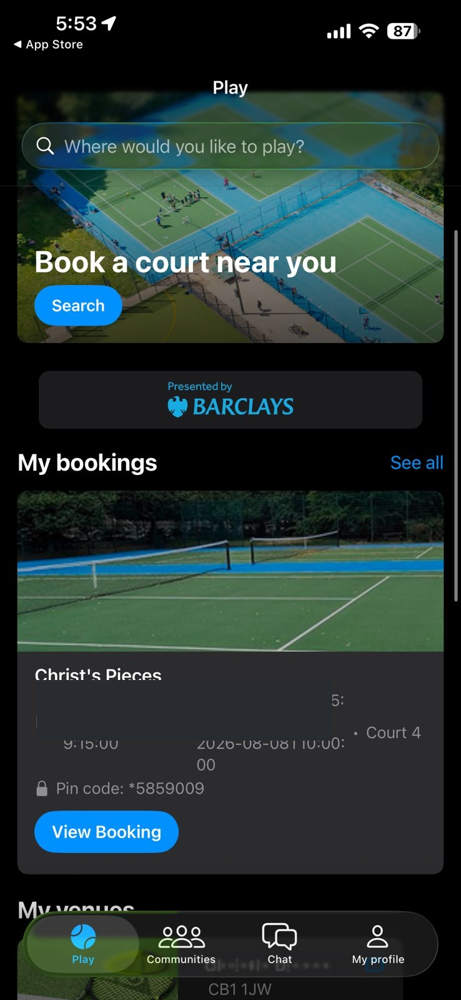
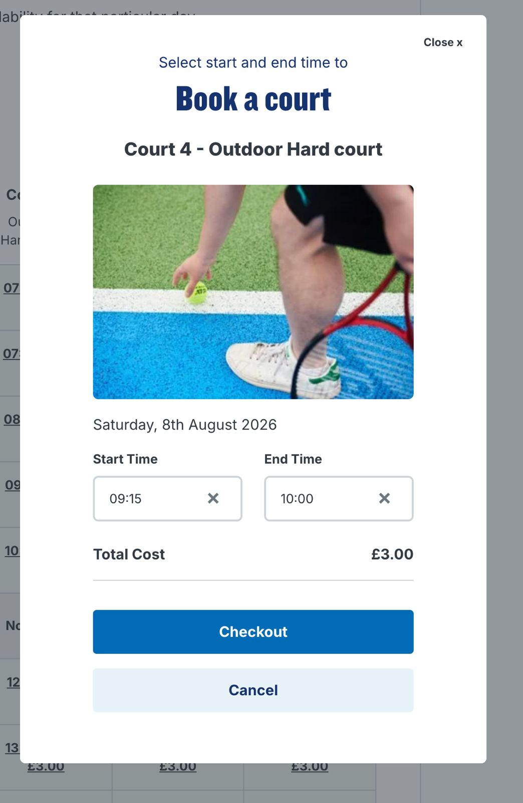

Enter the star first
Type * then your PIN from the app, with no space. Example shape only: *XXXXXX — never post the live code on this site or in a public chat.
📱 LTA Play Tennis / ClubSpark
This is the app we actually use. Search Christ's Pieces, pick a 45-minute slot, pay £3. Saturday slots are covered by Erdem.
🌳 Cambridge Parks Tennis 📍 Christ's Pieces booker
Cambridge City Council courts (Christ's Pieces, Jesus Green) use ClubSpark / LTA SmartAccess — an electronic keypad. Your code is only in the Play Tennis app after you book.
Type * then your PIN from the app, with no space. Example shape only: *XXXXXX — never post the live code on this site or in a public chat.
The PIN turns on 10–15 minutes before your start (e.g. 09:15) and stays live until shortly after your end (e.g. 10:00). It will not work outside that window — don’t arrive half an hour early expecting the gate to open.
The gate locks when it closes. You do not need a code to exit from the inside. Don’t hold the gate open for the next booking unless they have their own PIN.
Booking the court is only half the job. Push a message to the WhatsApp group so people can show up. Check the day before who is actually coming. Four makes a match — if the list is thin, invite others so you have playing partners.
Right after checkout, post: court, day, time. Do not paste the gate PIN in the chat if you can avoid it — keep that in the app.
The evening before, ping again: “Who is in?” If fewer than four, stack a second slot or move the time. Empty courts waste the £3.
Occasionally ask friends, neighbours, or a floater from the group. New learners are welcome. Kids: say so the night before.
💬 Post to WhatsApp now Share “who is in?”
Real screenshots from our flow: Court 4, outdoor hard, 09:15–10:00, total £3.00.


